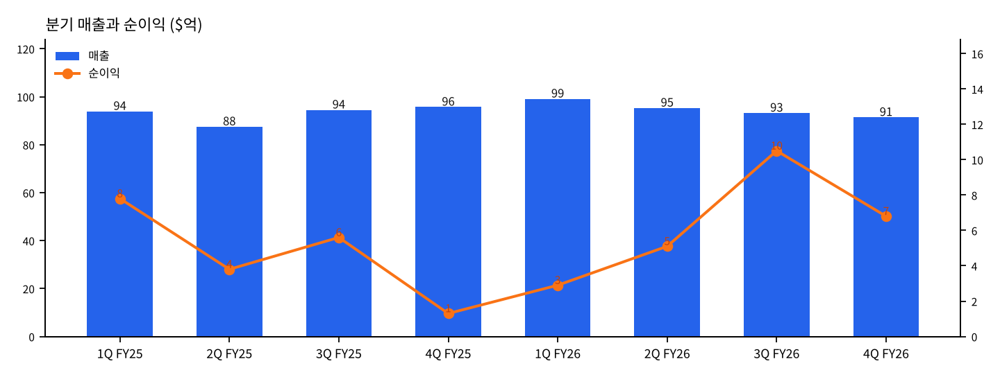
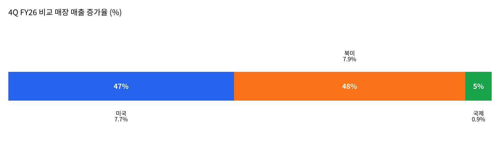
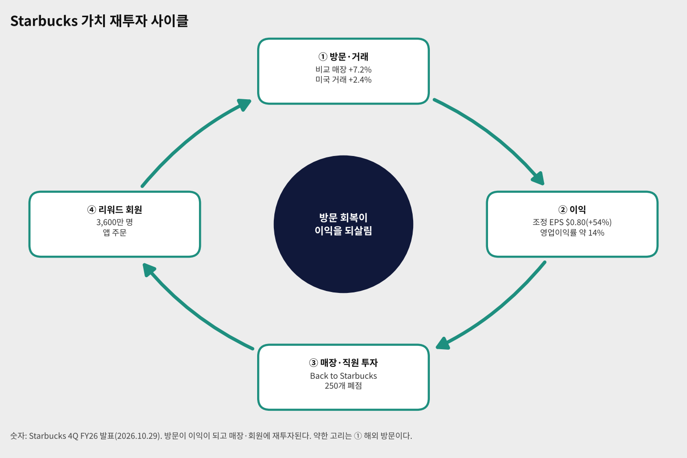

Starbucks는 매장·앱·구독형 리워드로 고객을 모으고 음료 한 잔당 마진을 받는다. 매장 수보다 객단가·거래 수 회복에 초점을 맞추는 중이다.
| 항목 | 내용 |
|---|---|
| 종목 | Starbucks (SBUX) · NASDAQ · 외식·커피 · 워싱턴 시애틀 |
| 최근 분기(4Q FY26) | 순매출 $91.4억, 조정 EPS $0.80 |
| 핵심 사업 | 직영·면허 매장, 리워드 앱, 포장 제품 |
| 직원 수 | 약 306,000명(트레이딩뷰) |
| 멀티플 | PER·PEG·P/S는 08~10 항목 표 참조 |
| 직책 | 인물 | 역할·특징 |
|---|---|---|
| 회장·CEO | 브라이언 니콜(Brian Niccol) | Back to Starbucks 계획으로 매장 경험 회복에 집중 |
| CFO | (확인 필요) | 회사 공개 자료 기준 확인 필요 |
경영 스타일: 본업 회복. 메뉴·매장 운영을 단순화하고 직원·고객 경험에 투자한다.
앱 주문과 리워드 회원 3,600만 명이 거래 수를 지지한다.
매장 경험을 회복하고 부진 매장을 닫는 계획. 이번 분기 북미 250개 폐점.
다음 실적발표는 세 가지 질문에 답하는 자리다.
1. 거래 수 회복이 이어지나?
2. FY27 가이던스를 맞추나?
3. 폐점이 매출을 깎는가?
한 줄 판정 규칙: 첫 질문(거래 수)이 이어지면 약한 고리인 ① 방문 회복이 단가 인상이 아니라 실제 수요로 확인된다.
일정: 1Q FY27 실적 발표는 2027.02.02 예정(트레이딩뷰).
| 분기 | 매출 | 순이익 | EPS | 조정 EPS | 특이 사항 |
|---|---|---|---|---|---|
| 1Q FY25 | $93.9억 | $7.8억 | 0.69 | 0.69 | |
| 2Q FY25 | $87.5억 | $3.8억 | 0.34 | 0.41 | |
| 3Q FY25 | $94.5억 | $5.6억 | 0.49 | 0.50 | |
| 4Q FY25 | $95.7억 | $1.3억 | 0.12 | 0.52 | |
| 1Q FY26 | $99.1억 | $2.9억 | 0.26 | 0.56 | |
| 2Q FY26 | $95.3억 | $5.1억 | 0.45 | 0.50 | |
| 3Q FY26 | $93.2억 | $10.5억 | 0.91 | 0.85 | |
| 4Q FY26 | $91.4억 | $6.8억 | 0.59 | 0.80 | 5분기 연속 비교 매장 매출 증가, 중국 분리 효과 |
매출은 트레이딩뷰 스캐너의 분기 총매출이라 회사가 발표한 순매출과 다를 수 있다. 회계연도는 9월 말에 끝나며 4Q FY26은 2026년 9월 27일에 끝난 분기다. 중국 합작 전환(비연결)이 매출 감소에 반영됐다. 매출·순이익·EPS(GAAP 희석)는 트레이딩뷰 스캐너, 조정 EPS는 트레이딩뷰 실적 페이지의 Reported 값이다. 분기 정렬은 오래된 분기→최신이다.

흐름 요약: 최근 분기 매출은 $91.4억로 전년 동기 $95.7억 대비 -4.5%, 순이익은 $6.8억(전년 $1.3억)다. 최근 4분기 GAAP EPS는 $2.21, 조정 EPS는 $2.71다.
| 항목 | 내용 | 4Q FY26 비교 매장 매출 | 비고 |
|---|---|---|---|
| 미국 | 직영 미국 | +7.7% | 객단가 +5.2%, 거래 +2.4% |
| 북미 전체 | 미국+캐나다 | +7.9% | 회사 발표 |
| 국제 | 중국 제외 해외 | +0.9% | 거래 −2.8% |

북미가 성장을 끌고 국제는 거래 수가 줄어 단가로만 버틴다.
Starbucks는 사람들이 이어지는 제3의 공간을 제공하는 커피 브랜드를 목표로 한다.
| 축 | 내용 |
|---|---|
| 매장 | 41,607개 |
| 회원 | 리워드 활성 3,600만 명 |
| 이익률 | 영업이익률 약 14% |

| 이동평균 | 값 | 종가 대비 | 위치 |
|---|---|---|---|
| 5일선 | $107.67 | -1.0% | 종가 아래 |
| 20일선 | $106.21 | +0.4% | 종가 위 |
| 50일선 | $99.87 | +6.7% | 종가 위 |
| 100일선 | $102.56 | +3.9% | 종가 위 |
| 200일선 | $100.75 | +5.8% | 종가 위 |
52주 고가 $111.50(2026-11-05)·저가 $81.97(2025-12-10) 범위에서 종가 $106.60는 20일선, 50일선, 100일선, 200일선을 웃돌고 5일선은 밑돈다.
| 규칙 | 기준 | 현재 값 | 신호 |
|---|---|---|---|
| 장기 추세 필터 | 종가 vs 200일선 | $106.60 > $100.75 | 매수 |
| 중장기 교차 | 50일선 vs 200일선 | $99.87 < $100.75 | 매도 |
| 단기 교차 | 20일선 vs 50일선 | $106.21 > $99.87 | 매수 |
| 돈키언 채널 | 55일 고가 $111.50 / 저가 $87.35 | 중간값 $99.42 위 | 매수 |
| 1개월 모멘텀 | 21거래일 수익률 | +7.6% (기준 $99.08) | 매수 |
| 3개월 모멘텀 | 63거래일 수익률 | -0.4% (기준 $107.08) | 매도 |
| 6개월 모멘텀 | 126거래일 수익률 | +2.4% (기준 $104.13) | 매수 |
| 12개월 모멘텀 | 252거래일 수익률 | +27.9% (기준 $83.33) | 매수 |
| 종합 (8개 평균) | +0.50 | 매수 |
해석: 매수 신호 6개(장기 추세 필터, 단기 교차, 돈키언 채널, 1개월 모멘텀, 6개월 모멘텀, 12개월 모멘텀), 매도 신호 2개(중장기 교차, 3개월 모멘텀). CTA 점수 +0.50(매수). 14일 ATR $3.28 (3.1%), 52주 고가 $111.50 · 저가 $81.97.
| 가격 | 기준 | 무엇이 바뀌나 |
|---|---|---|
| $111.50 | 55일 고가 | 돌파 시 채널 상단 갱신 |
| $107.08 | 3개월 모멘텀 기준가 | 종가가 이 가격 위면 3개월 신호 매수 |
| $104.13 | 6개월 모멘텀 기준가 | 종가가 이 가격 위면 6개월 신호 매수 |
| $100.75 | 200일선 | 종가가 이 선 위/아래인지로 장기 추세 신호가 바뀜 |
| $99.42 | 돈키언 중간값 | 55일 채널 중간값 위/아래로 신호가 바뀜 |
| $99.08 | 1개월 모멘텀 기준가 | 종가가 이 가격 위면 1개월 신호 매수 |
| $87.35 | 55일 저가 | 이탈 시 채널 하단 갱신 |
| $83.33 | 12개월 모멘텀 기준가 | 종가가 이 가격 위면 12개월 신호 매수 |
가격 수준은 신호가 바뀌는 기준선일 뿐 진입·청산 가격 제안이 아니다. 20일/50일 교차는 이동평균 자체가 움직여 단일 가격으로 표시하지 않았다. 일봉·주봉은 종가 기준 직접 계산(고저 데이터 미사용)이다.
| 악재 요인 | 내용 | 강도 |
|---|---|---|
| 해외 부진 | 국제 거래 −2.8% | 중간 |
| 중국 분리 | 순매출 −4%에 영향 | 참고 |
| 구조조정 | 북미 250개 매장 폐점 | 중간 |
| 티커 | 회사 | PER(TTM) | PEG | P/S | EPS 성장(YoY) |
|---|---|---|---|---|---|
| SBUX | Starbucks | 39.3배 | 1.41 | 3.20배 | +28% |
| MCD | McDonald's | 21.7배 | 2.79 | 7.03배 | +8% |
| CMG | Chipotle | 34.6배 | – | 3.57배 | -6% |
| YUM | Yum! Brands | 12.9배 | 0.09 | 5.03배 | +143% |
| DRI | Darden | 22.7배 | 2.40 | 2.05배 | +10% |
비교 결론: Starbucks의 PER 39.3배는 McDonald's·Chipotle·Yum!·Darden보다 높다. PEG 1.41는 McDonald's(2.79)·Darden(2.40)보다 낮고 Yum!(0.09)보다 높다.
현금·부채는 트레이딩뷰 스캐너 값이다. 부채가 현금보다 많은 구조다.
| 지표 | 값 | 출처 | 해석 |
|---|---|---|---|
| 현금·단기투자 | $39억 | 트레이딩뷰 스캐너(최근 분기) | |
| 총부채 | $224억 | 트레이딩뷰 스캐너(최근 분기) | |
| 순부채(부채−현금) | $185억 | 내 계산 | 현금 대비 부채 부담 |
| 잉여현금흐름(TTM) | $37억 | 트레이딩뷰 스캐너 | |
| TTM 매출 | $379억 | 트레이딩뷰 스캐너 |
| 기준 | 매출 | P/S | 비고 |
|---|---|---|---|
| 내 계산(종가 ÷ 최근 4분기 매출 합계) | $379.0억 | 3.20배 | 시총은 정렬용 데이터에서만 사용 |
| 동종(트레이딩뷰) | – | MCD 7.03배 · CMG 3.57배 · YUM 5.03배 · DRI 2.05배 | 11.19 |
해석: 자사주 매입은 FY27에 재개된다고 회사가 밝혔다. 그 전까지 이익은 매장 투자에 우선 쓰인다(내 해석).
EBITDA는 영업활동의 현금 창출력을 보는 지표이고, PEG는 PER을 EPS 성장률로 나눈 값이다. EBITDA·FCF는 트레이딩뷰 TTM 값이다.
| 지표 | 값 | 산출 |
|---|---|---|
| EBITDA(TTM) | $56억 | 트레이딩뷰 스캐너 |
| EBITDA 마진 | 14.8% | EBITDA ÷ TTM 매출(내 계산) |
| FCF 마진 | 9.8% | FCF ÷ TTM 매출(내 계산) |
| PER(GAAP TTM) | 48.2배 | $106.60 ÷ $2.21 |
| PER(조정 TTM) | 39.3배 | $106.60 ÷ $2.71 |
| 방식 | PER | EPS 성장률 | PEG | 판정 |
|---|---|---|---|---|
| 조정 EPS (TTM $2.71) | 39.3배 | +28% ($2.12 → $2.71) | 1.41 | 기준 초과 |
| GAAP EPS (TTM $2.21) | 48.2배 | +35% ($1.64 → $2.21) | 1.39 | 기준 초과 |
판정: 조정 EPS 기준 PEG 1.41 → 1.0 초과 PEG 기준은 1.0 이하 투자 적격, 0.5 이하 적극 매수다. EPS 성장률은 최근 4분기 EPS 합계를 직전 4분기 합계와 비교한 값(내 계산)이고, 일회성 항목이 있으면 조정 EPS 행을 함께 본다.

Starbucks의 사이클: 매장 이익이 직원·경험에 재투자돼 방문과 앱 회원을 늘리고, 그것이 다시 매출이 되는 순환이다.
| 고리 | 현재 숫자·근거 |
|---|---|
| ① 방문·거래 | 4Q FY26 글로벌 비교 매장 매출 +7.2% · 미국 거래 +2.4% |
| ② 이익 | 조정 EPS $0.80(+54%) · 영업이익률 약 14% |
| ③ 매장·직원 투자 | 북미 250개 매장 폐점(분기) · 매장 경험 투자 |
| ④ 리워드 회원 | 리워드 90일 활성 회원 3,600만 명 |
사이클의 특징: 약한 고리는 ① 해외 방문이다(국제 거래가 −2.8%로 줄었다). "(내 해석)"은 보고서 수치가 아닌 해석이다.